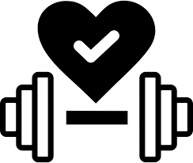

Autor: Štěpán Prokop | Datum: 24. března 2025
S radostí oznamuji spuštění nové webové stránky Fitness a Zdraví. Tato stránka je zaměřena na zdravý životní styl, správné cvičení a výživu. Mým cílem je vytvořit komunitu lidí, kteří chtějí pracovat na sobě, zlepšit své zdraví a podělit se o své zkušenosti.
Postupně budu přidávat další obsah, včetně videonávodů na cvičení a rozhovorů s odborníky. Pokud máte jakékoliv návrhy na zlepšení nebo byste chtěli přidat vlastní článek, neváhejte mě kontaktovat!